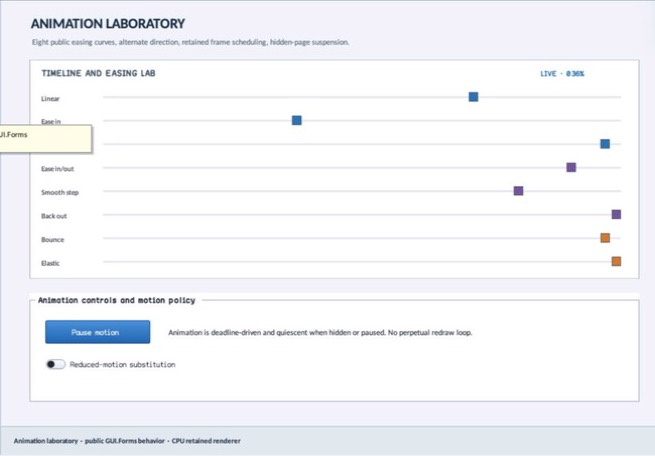

struct · library
EasingPreviewTrack
EasingPreviewTrack is one caller-authored easing comparison row: exact curve, label, and marker color.
OBSERVED: bundle 006 value-type split; M4 build, focused tests, and Screen Sharing passheader-only or distributed
Visual evidence

Ownership and hierarchy
- Hierarchy
- EasingPreviewTrack
- Declaration
- include/gui_forms/controls/easing_preview/easing_preview.hpp:11
- Definition
- inline/header-only
Declared methods
operator== public
friend bool operator==(const EasingPreviewTrack&, const EasingPreviewTrack&) = defaultCompares curve, label, and color for exact retained configuration equality.